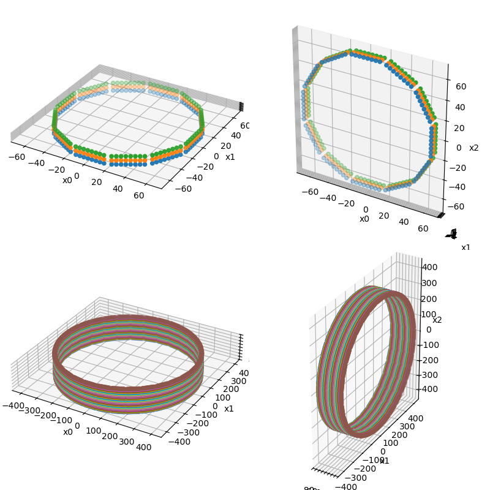
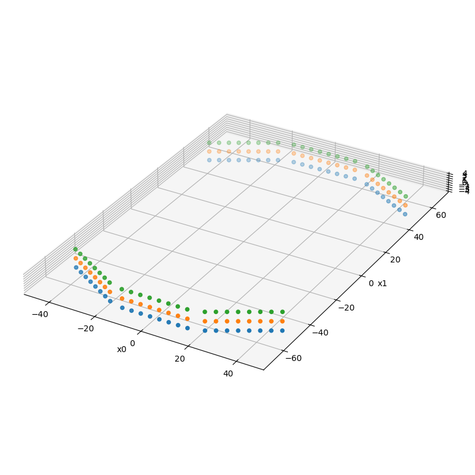

Note
Go to the end to download the full example code.
Regular polygon PET scanner geometry
This example shows how to create and visualize PET scanners where the LOR endpoints can be modeled as a stack of regular polygons.
Tip
parallelproj is python array API compatible meaning it supports different
array backends (e.g. numpy, cupy, torch, …) and devices (CPU or GPU).
Choose your preferred array API xp and device dev below.
18 import array_api_compat.numpy as xp
19
20 # import array_api_compat.cupy as xp
21 # import array_api_compat.torch as xp
22
23 import parallelproj
24 import matplotlib.pyplot as plt
25
26 # choose a device (CPU or CUDA GPU)
27 if "numpy" in xp.__name__:
28 # using numpy, device must be cpu
29 dev = "cpu"
30 elif "cupy" in xp.__name__:
31 # using cupy, only cuda devices are possible
32 dev = xp.cuda.Device(0)
33 elif "torch" in xp.__name__:
34 # using torch valid choices are 'cpu' or 'cuda'
35 dev = "cuda"
- - - - - - - - - - - -
P A R A L L E L | P R O J
- - - - - - - - - - - -
=================================================
Please consider citing our publication
---------------------------------------------
Georg Schramm and Kris Thielemans:
"PARALLELPROJ—an open-source framework for
fast calculation of projections in
tomography"
Front. Nucl. Med., 08 January 2024
Sec. PET and SPECT, Vol 3
https://doi.org/10.3389/fnume.2023.1324562
=================================================
parallelproj C lib ..: /home/runner/miniconda3/envs/readthedocs/lib/libparallelproj_c.so.1.10.0
parallelproj CUDA lib ..: None
parallelproj CUDA kernel file ..: None
parallelproj CUDA present ..: False
parallelproj cupy enabled ..: False
Define four different PET scanners with different geometries
RegularPolygonPETScannerGeometry can be used to create the
geometry of PET scanners where the LOR endpoints can be modeled as a stack of
regular polygons.
Here we create four different PET scanners with different geometries. Note that symmetry_axis can be used to define which of the three axis is used as the cylinder (symmetry) axis.
49 scanner1 = parallelproj.RegularPolygonPETScannerGeometry(
50 xp,
51 dev,
52 radius=65.0,
53 num_sides=12,
54 num_lor_endpoints_per_side=8,
55 lor_spacing=4.0,
56 ring_positions=xp.linspace(-4, 4, 3),
57 symmetry_axis=2,
58 )
59
60 scanner2 = parallelproj.RegularPolygonPETScannerGeometry(
61 xp,
62 dev,
63 radius=65.0,
64 num_sides=12,
65 num_lor_endpoints_per_side=8,
66 lor_spacing=4.0,
67 ring_positions=xp.linspace(-4, 4, 3),
68 symmetry_axis=1,
69 )
70
71 scanner3 = parallelproj.RegularPolygonPETScannerGeometry(
72 xp,
73 dev,
74 radius=400.0,
75 num_sides=32,
76 num_lor_endpoints_per_side=16,
77 lor_spacing=4.3,
78 ring_positions=xp.linspace(-70, 70, 36),
79 symmetry_axis=2,
80 )
81
82 scanner4 = parallelproj.RegularPolygonPETScannerGeometry(
83 xp,
84 dev,
85 radius=400.0,
86 num_sides=32,
87 num_lor_endpoints_per_side=16,
88 lor_spacing=4.3,
89 ring_positions=xp.linspace(-70, 70, 36),
90 symmetry_axis=0,
91 )
Obtaining world coordinates of LOR endpoints
RegularPolygonPETScannerGeometry.get_lor_endpoints() can be used
to obtain the world coordinates of the LOR endpoints
99 # get the word coordinates of the 4th LOR endpoint in the 1st "ring" (polygon)
100 # and the 5th LOR endpoint in the 2nd "ring" (polygon)
101 print("scanner1")
102 print(
103 scanner1.get_lor_endpoints(
104 xp.asarray([0, 1], device=dev), xp.asarray([3, 4], device=dev)
105 )
106 )
107 print("scanner2")
108 print(
109 scanner2.get_lor_endpoints(
110 xp.asarray([0, 1], device=dev), xp.asarray([3, 4], device=dev)
111 )
112 )
scanner1
[[-2. 65. -4.]
[ 2. 65. 0.]]
scanner2
[[65. -4. -2.]
[65. 0. 2.]]
Visualize the defined LOR endpoints
RegularPolygonPETScannerGeometry.show_lor_endpoints() can be used
to visualize the defined LOR endpoints
121 fig = plt.figure(figsize=(8, 8), tight_layout=True)
122 ax1 = fig.add_subplot(221, projection="3d")
123 ax2 = fig.add_subplot(222, projection="3d")
124 ax3 = fig.add_subplot(223, projection="3d")
125 ax4 = fig.add_subplot(224, projection="3d")
126 scanner1.show_lor_endpoints(ax1)
127 scanner2.show_lor_endpoints(ax2)
128 scanner3.show_lor_endpoints(ax3)
129 scanner4.show_lor_endpoints(ax4)
130 fig.show()

Defining an open PET scanner geometry
The phis argument can be used to manually define the azimuthal angles of the polygon “sides”. This can be used to create open PET scanner geometries. Here we create an open geometry with 6 sides and 3 rings corresponding to a full geometry using 12 sides where 6 sides were removed.
142 open_scanner = parallelproj.RegularPolygonPETScannerGeometry(
143 xp,
144 dev,
145 radius=65.0,
146 num_sides=6,
147 num_lor_endpoints_per_side=8,
148 lor_spacing=4.0,
149 ring_positions=xp.linspace(-4, 4, 3),
150 symmetry_axis=2,
151 phis=(2 * xp.pi / 12) * xp.asarray([-1, 0, 1, 5, 6, 7]),
152 )
153
154 fig2 = plt.figure(figsize=(8, 8), tight_layout=True)
155 ax2a = fig2.add_subplot(111, projection="3d")
156 open_scanner.show_lor_endpoints(ax2a)
157 fig2.show()

Total running time of the script: (0 minutes 2.387 seconds)
Related examples